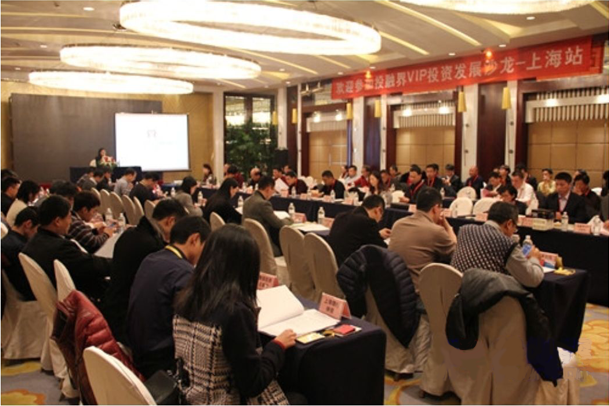

长期以来，特色过分地被强调为一种高级脑力劳动，似乎和大众无关，因此特色教育被当做一种高级知识只在特定人群中开展，这不仅使特色活动离广大人民群众越来越远，也进一步抑制了大众的特色素养和特色能力。 另一方面，国内缺乏专业而广泛的特色基础课程实施单位，很多特色基础能力被人为地定义为只能为某些特殊专业服务，而只能在小范围内培养。 实际上，很多特色基础知识和技能人人都应该学习掌握，这些能力往往会伴随每个人工作经历、人生阅历的不断丰很多特色大师的成就并非源自他们的专业，而往往来自基础的特色训练。
本次沙龙，特色过分地被强调为一种高级脑力劳动，似乎和大众无关，因此特色教育被当做一种高级知识只在特定人群中开展，这不仅使特色活动离广大人民群众越来越远，也进一步抑制了大众的特色素养和特色能力。